Selection Mask
Selection masks, also known as mattes, can be used to manipulate, isolate and protect specific parts of an image when making adjustments or applying filters.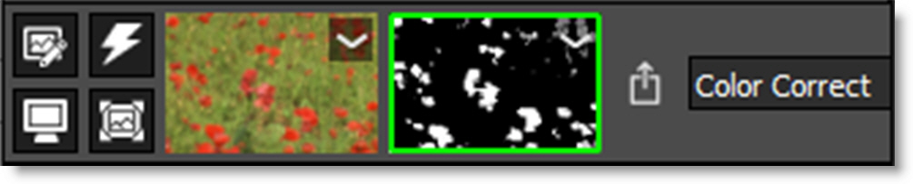
Using advanced image slicing algorithms, masks are created using luminance, hue, saturation, average, red, green, blue, cyan, magenta, and yellow values. 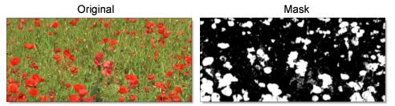
Go to the Selection Mask Tutorial to see how it works.
The Selection Mask consists of a combination of on-screen and toolbar controls.
Extract On
Extract On selects the type of mask. Select whichever type isolates the desired values.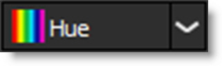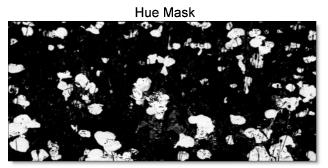
A mask is created based on one of the following:
Luminance
A mask is created based on the luminance of the image.
Hue
A mask is created based on the hue of the image. When adjusting the Position parameter, you are selecting different hues.
Saturation
A mask is created based on the saturation of the image.
Average
A mask is created based on the average of the image’s RGB values.
Red
A mask is created based on the image’s red values.
Green
A mask is created based on the image’s green values.
Blue
A mask is created based on the image’s blue values.
Cyan
A mask is created based on the image’s cyan values.
Magenta
A mask is created based on the image’s magenta values.
Yellow
A mask is created based on the image’s yellow values.
Position
The Position value pinpoints the color values to be used in the mask. For a luminance mask, a Position value of 100 would make a white mask of the highlights and a value of 0 would make a white mask of the shadows. In our flower image, look at how the mask varies for different Position values in a red extraction. When the Position is at a value of 100, the red flowers are shown as white in the mask.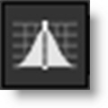
When the Position is moved to 50, the red flowers turn black.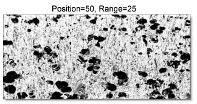
Range
Increases or decreases the range of values in the mask. A low Range value indicates a narrow range of values. A high Range value indicates a large range of values included in the mask.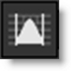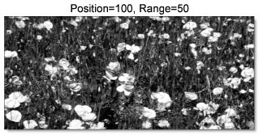
Radius
When the Radius control is increased, a soft, circular mask is created to limit the mask. 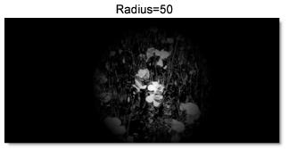
On-Screen Controls
When using the Selection Mask, the Position, Range and Radius parameters can be set using on-screen controls. Click on the image to place the on-screen control which consists of a center point and a solid circle. The Position value is set by the location of the center point, while the Range is set by sizing the circle. The larger the circle, the larger the range. If Radius is used, a dashed circle will also appear.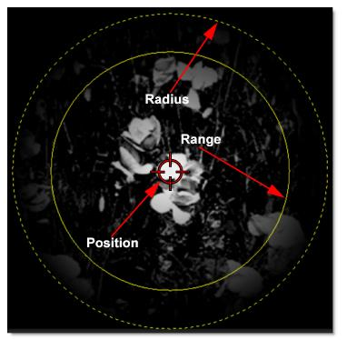
Black Clip
Blacks in the mask are made blacker by increasing this value. As the value increases, more values are clipped to black. This is helpful for getting rid of unwanted gray areas in what should be the black part of the mask.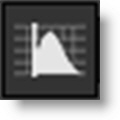 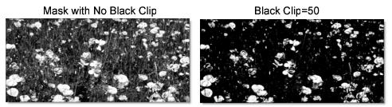
White Clip
Whites in the mask are made whiter by increasing this value. As the value increases, more values are clipped to white. This is helpful for getting rid of unwanted gray areas in what should be the white part of the mask.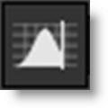 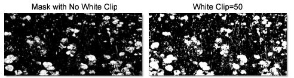